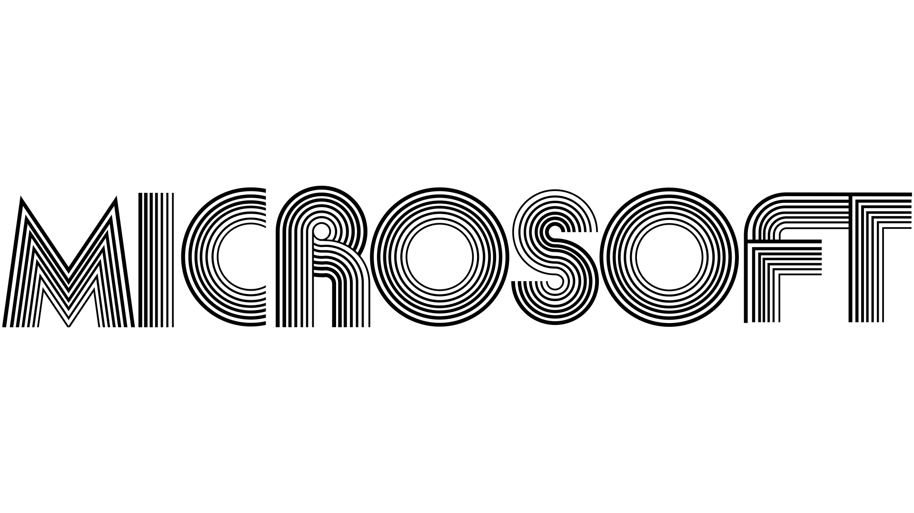
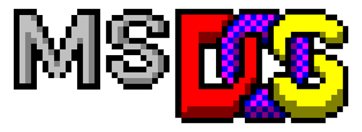
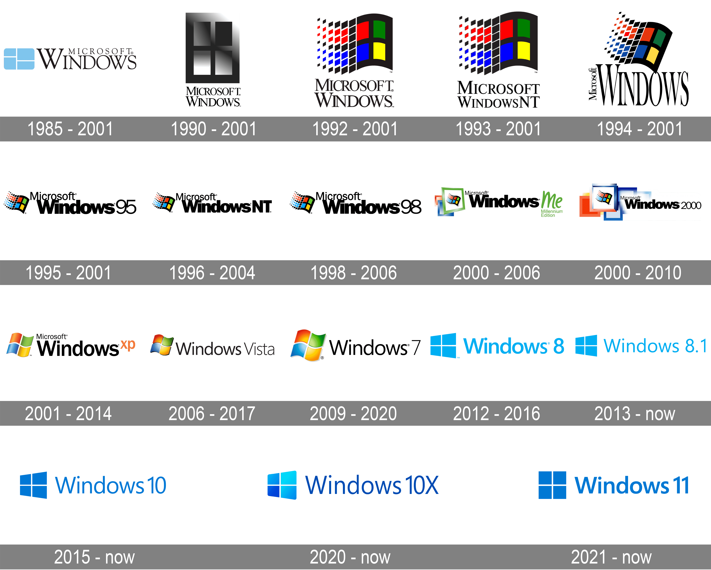
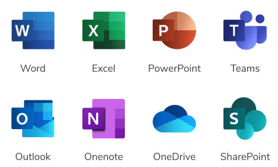
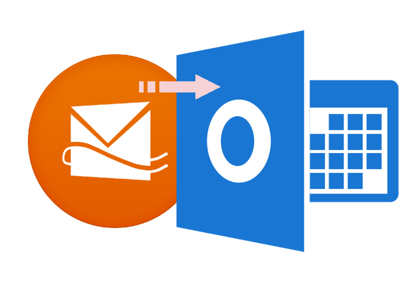
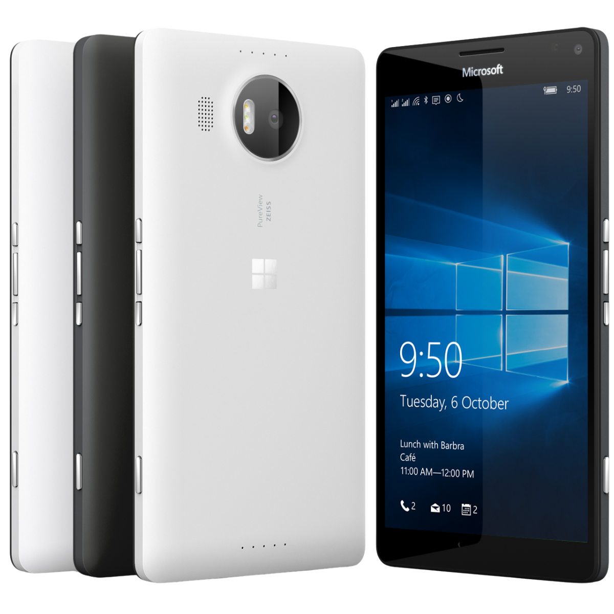
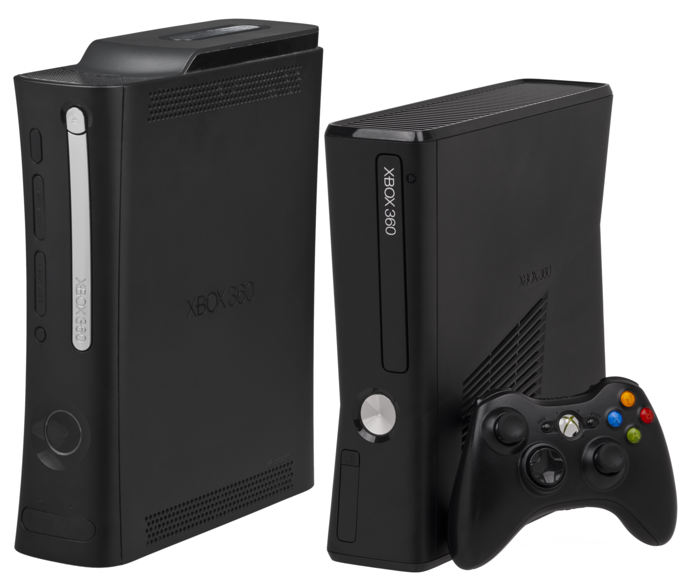
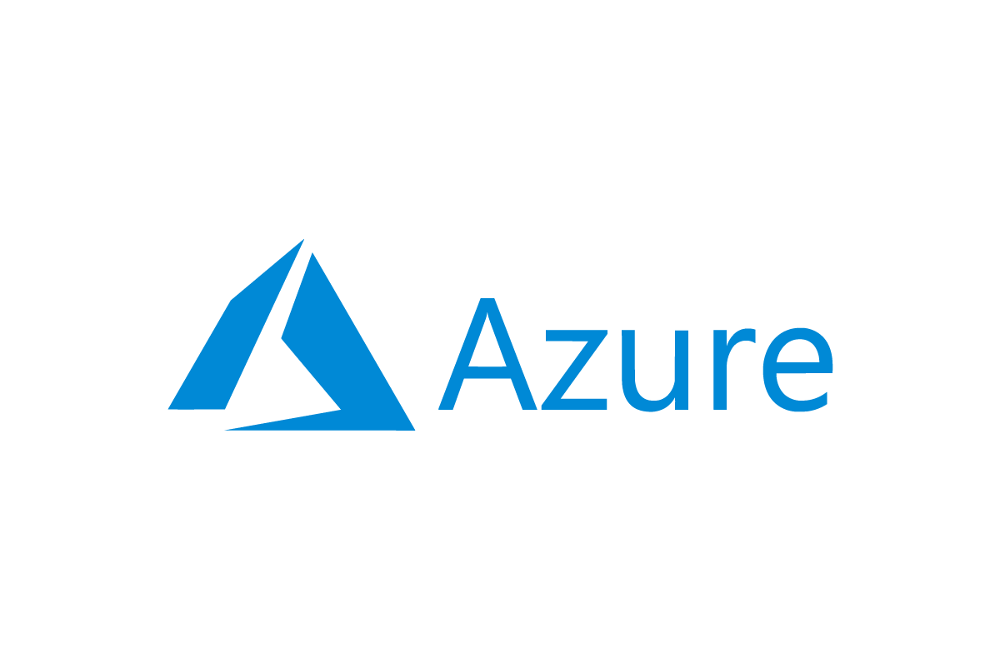

Os produtos e serviços mais icônicos da Microsoft
Ao longo dos 50 anos, a Microsoft se notabilizou por uma série de lançamentos, de criações internas a aquisições estratégicas em vários setores da tecnologia — incluindo games, comunicação, navegação pela internet e o mundo corporativo. A seguir, vamos relembrar alguns dos mais importantes.
- MS-DOS
- Windows
- Office
- Outlook/Hotmail
- Internet Explorer
- MSN Messenger
- Windows Phone
- Xbox
- Azure
Em 1981, a IBM lançou o popular computador pessoal da empresa, hoje chamado apenas de IBM PC. Esse modelo lendário rodava a partir de um sistema operacional licenciado da Microsoft e que funcionava apenas por linhas de texto: o Microsoft Disk Operating System, ou MS-DOS. A criação não é original da empresa: ela licenciou um software de testes de uma pequena companhia dos EUA e fez modificações no projeto antes de repassá-lo para o novo cliente, transformando ele no seu primeiro grande sucesso comercial. Presente não só no PC da IBM, mas em outros modelos da mesma época, o MS-DOS virou referência na área crescente dos microcomputadores e permitiu que a Microsoft desse saltos mais ousados como empresa.

──────────────────────────────────────────────────── ⋆⋅🌐⋅⋆ ───────────────────────────────────────────────────────
Em 1985, nasce o produto mais famoso da companhia: o Windows, um sistema operacional com interface gráfica que inicialmente servia apenas de evolução natural do MS-DOS. O uso do mouse, navegação por janelas e programas cada vez mais complexos foram conquistando o mercado e, ao longo das versões seguintes, estabelecendo um domínio. Com marketing de peso e até filas nas lojas, a chegada do Windows 95 consolidou a posição desse serviço, que já passou por muitas modificações em visual e funcionamento. Mesmo com algumas versões controversas, como a Millennium Edition (Me) e o Windows 8, ela segue massivamente presente em aparelhos. O Windows está hoje presente em cerca de 70% do mercado de desktops, quase o triplo da fatia de mercado da vice-líder Apple.

──────────────────────────────────────────────────── ⋆⋅🌐⋅⋆ ───────────────────────────────────────────────────────
O The Microsoft Office, nome do primeiro pacote de programas de edição de conteúdo da empresa, foi lançado em 1989 apenas para o Macintosh da Apple. Esse foi o início da história da suite de softwares mais popular da companhia, que só um ano depois chegou ao Windows e ganhou o mundo. A primeira versão era composta de um trio de ferramentas existentes até hoje. O Word, para criar textos; o Excel, de gerenciamento de gráficos e planilhas; e o PowerPoint, responsável por apresentações de slides. Ambos já eram oferecidos separadamente, mas a venda conjunta foi um sucesso e transformou esses serviços em sinônimos de suas respectivas áreas. O pacote Office hoje é bem diferente de décadas atrás. Ele atualmente é chamado de Microsoft 365, oferecido principalmente em modelos de assinatura e contando com ainda mais programas do que o trio original, além de recursos de inteligência artificial (IA).

──────────────────────────────────────────────────── ⋆⋅🌐⋅⋆ ───────────────────────────────────────────────────────
O Hotmail foi um dos primeiros clientes de email disponíveis na internet quando foi adquirido pela Microsoft em 1997. Muita gente que navegava no período teve um endereço "@hotmail.com" antes da popularização da Google nesse mercado. Em 2013, a companhia evoluiu esse produto com o Outlook.com, transformando esse nome no cliente unificado de mensagens eletrônicas. A plataforma hoje está totalmente integrada a outros serviços, como Teams e Office, integrando também calendário e outras formas de comunicação.

──────────────────────────────────────────────────── ⋆⋅🌐⋅⋆ ───────────────────────────────────────────────────────
Por mais que você não gostasse do Internet Explorer, não tinha jeito: ao ligar um PC com Windows pela primeira vez, era inevitável usá-lo ao menos para baixar o navegador da sua preferência e depois esquecer dele na Área de Trabalho. Mesmo com essa fama, o produto lançado em 1995 dominou o setor de browsers por anos, derrubando o então líder Netscape Navigator e só destronado com a chegada de nomes como Mozilla Firefox e Google Chrome. O Internet Explorer chegou a ter 95% do mercado de navegadores, mas a popularidade decaiu a ponto de ele ser substituído por um novo produto: o Microsoft Edge, de 2015 — ele mesmo também já remodelado para rodar a partir do Chromium, o mesmo motor por trás do seu grande rival.

──────────────────────────────────────────────────── ⋆⋅🌐⋅⋆ ───────────────────────────────────────────────────────
Forma de comunicação pela internet favorita do brasileiro por muitos anos, o MSN Messenger nasceu em 1999 como um projeto paralelo de um portal de serviços da Microsoft. O serviço imortalizou recursos como o "chamar atenção" que balançava a tela, o "aparecer offline" para seguir invisível para outras pessoas, os mini-games embutidos e as personalizações visuais do pacote Plus. No auge, ele chegou a ter mais de 330 milhões de usuários ativos, sendo um dos líderes do mercado de chat pela internet. Rebatizado posteriormente como Windows Live Messenger, o programa foi encerrado em 2013 para que a Microsoft direcionasse o foco para outro produto de comunicação, o Skype.
──────────────────────────────────────────────────── ⋆⋅🌐⋅⋆ ───────────────────────────────────────────────────────
O Windows Phone foi a tentativa da Microsoft de brigar contra Android e iOS no mercado de dispositivos móveis. O sistema operacional tinha uma interface bastante original e teve alta popularidade no Brasil, apesar de não atingir os objetivos esperados pela companhia. Antes dele, a empresa participou desse mercado com o Windows CE , voltado principalmente para assistentes pessoais digitais (PDAs), e o Windows Mobile que expandiu para outros aparelhos portáteis multimídia. A Microsoft chegou a comprar a divisão mobile da Nokia em 2014 após alguns anos de parceria, passando a controlar o lançamento de dispositivos da família Lumia. Com o tempo, porém, ela foi deixando esse setor de lado: a última versão da plataforma foi a Windows 10 Mobile, de 2015 — mesmo ano em que saiu o modelo final da linha, o Lumia 950.

──────────────────────────────────────────────────── ⋆⋅🌐⋅⋆ ───────────────────────────────────────────────────────
A entrada da Microsoft no setor de consoles aconteceu em 2001, com o primeiro Xbox. O aparelho foi recebido de forma menos badalada do que rivais, mas abriu caminho para uma série de lançamentos de sucesso em jogos exclusivos e hardwares futuros. O sucessor, Xbox 360, superou graves percalços técnicos e foi um fenômeno comercial — inclusive em vendas no Brasil. Atualmente, a divisão Xbox é um verdadeiro império. Além de consoles (Xbox Series S e Series X), ela mantém um serviço de assinatura com possibilidade até de jogar via nuvem, o Game Pass, e é dona de inúmeros estúdios de desenvolvimento. Citando apenas exemplos recentes, integram a lista de braços da Microsoft em games a ZeniMax Media (que incluem a Bethesda, de franquias como Fallout e Elder Scrolls), a Mojang (o estúdio responsável pelo lançamento de Minecraft) e, mais recentemente, a Activision Blizzard — conglomerado responsável por séries como Call of Duty, World of Warcraft e até o sucesso mobile Candy Crush Saga.

──────────────────────────────────────────────────── ⋆⋅🌐⋅⋆ ───────────────────────────────────────────────────────
A Azure é a plataforma de soluções e serviços de computação em nuvem para empresas de vários portes. A divisão é hoje formada por uma série de ferramentas que operam em várias tecnologias, inclusive de código aberto. Apresentada em 2008 e lançada oficialmente dois anos depois, ela virou uma das principais fontes de receita da Microsoft e transformou a empresa em referência também em infraestrutura. Hoje, são mais de 300 datacenters espalhados pelo planeta como parte do projeto. As soluções atuais incluem recursos de IA, análise de dados, infraestrutura de hospedagem, segurança de rede e desenvolvimento de aplicativos, entre muitas outras possibilidades.

──────────────────────────────────────────────────── ⋆⋅🌐⋅⋆ ───────────────────────────────────────────────────────